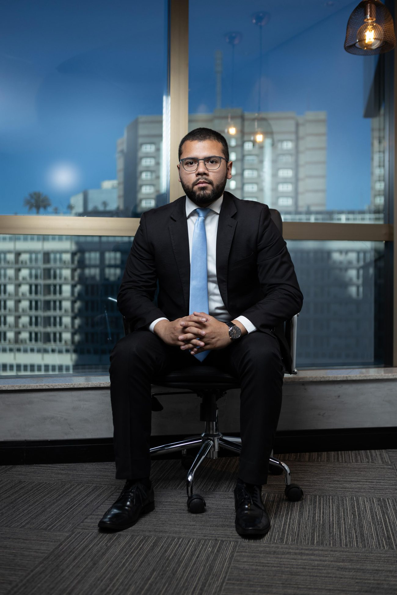
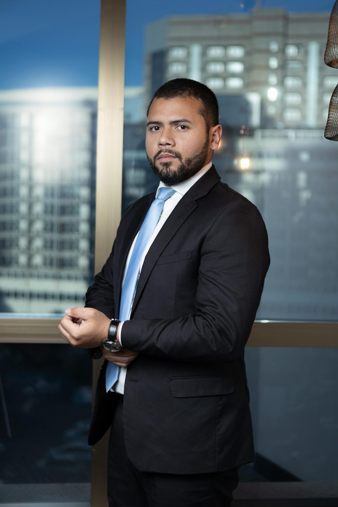

Atuação criminal técnica e combativa em todas as fases do processo penal — do flagrante e da audiência de custódia ao Tribunal do Júri e aos tribunais superiores.
Análise sigilosa do seu caso. Atendimento de urgência 24 horas para prisões em flagrante.

O foco é criminal. Cada caso recebe estratégia individual, presença em audiência e comunicação direta com o cliente e a família.
Defesa em inquéritos, ações penais, habeas corpus, prisões em flagrante e preventivas, audiências de custódia e recursos. Atuação combativa em todas as instâncias.
Defesa técnica em crimes dolosos contra a vida, da pronúncia à sustentação oral em plenário, com preparação detalhada de tese e provas.
Atendimento imediato 24h para prisões em flagrante, comunicação com a delegacia, pedidos de liberdade provisória e relaxamento de prisão.
Um processo criminal tem etapas, e cada uma exige uma decisão certa no tempo certo. Veja onde a presença do advogado faz diferença.
Acompanhamento desde o inquérito policial e a audiência de custódia. É aqui que erros são evitados e a liberdade muitas vezes é decidida.
Produção de provas, oitiva de testemunhas e construção da tese de defesa, com participação ativa em todas as audiências.
Sustentação oral e defesa em plenário, com preparação minuciosa do caso e da estratégia perante os jurados.
Recursos aos tribunais e atuação perante as instâncias superiores, buscando reverter decisões e assegurar cada garantia do cliente.

Advogado com mais de uma década dedicada à advocacia criminal, com inscrição ativa na OAB de Mato Grosso do Sul e Mato Grosso. Atua de forma personalizada, acompanhando cada etapa do processo ao lado do cliente e de sua família.
O compromisso é direto: comunicação clara, disponibilidade real e defesa técnica em cada decisão.
Formação em Direito
Bacharel em Direito, com dedicação integral à área criminal desde o início da carreira
Especialização em Ciências Penais
Aprofundamento técnico em Direito Penal e Processo Penal
Atuação em MS e MT
Inscrição ativa OAB/MS 23.051 e OAB/MT 35.121-A
Atendimento sigiloso. Para urgências e prisões em flagrante, o contato é imediato, 24 horas.
Horário Seg a Sex, 8h–18h · Urgências 24h